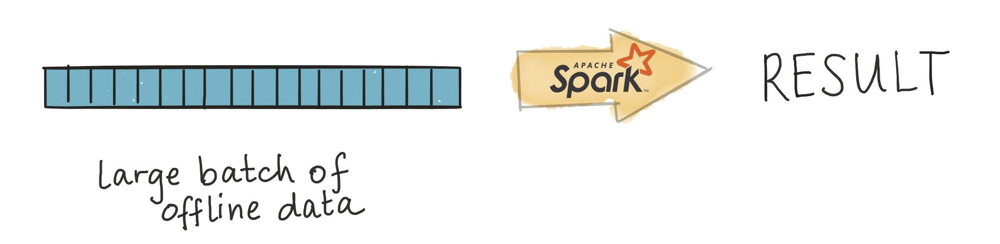
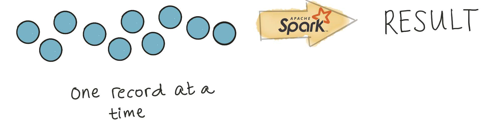
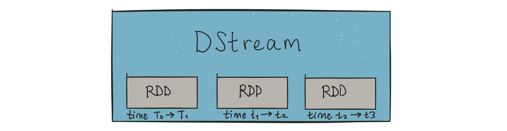
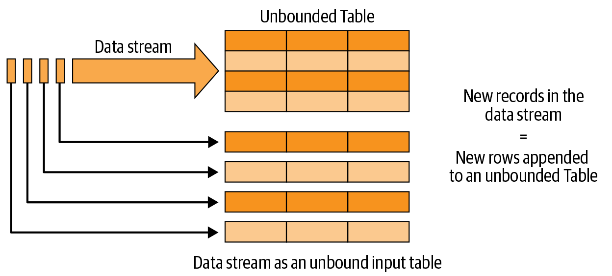
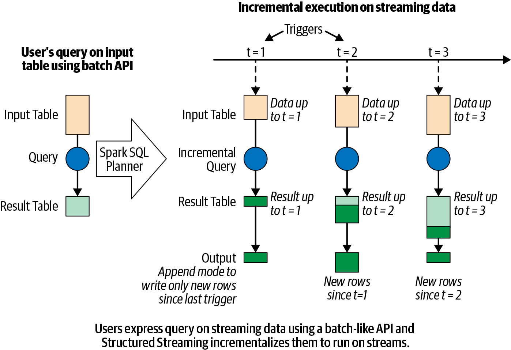
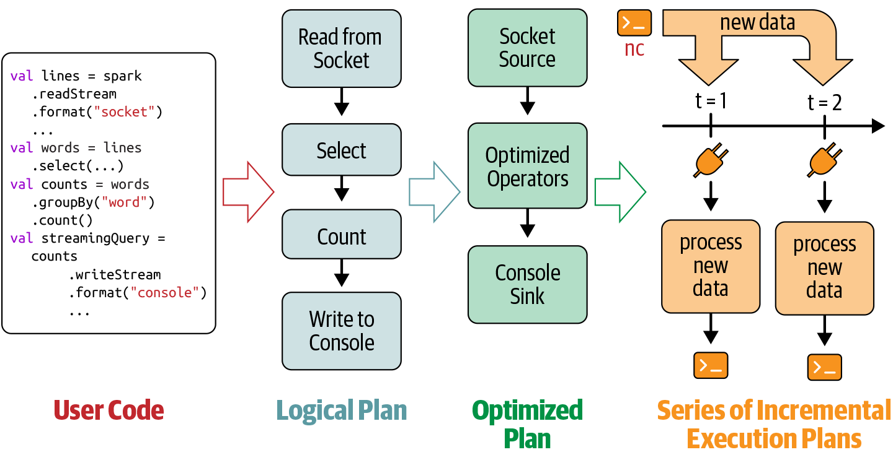
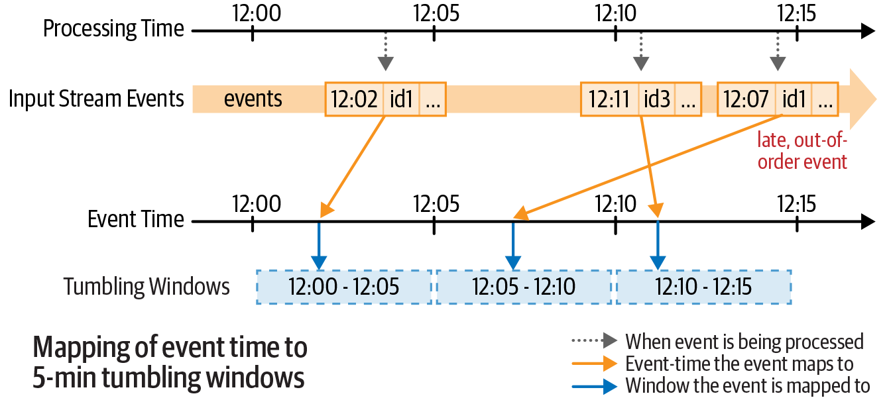
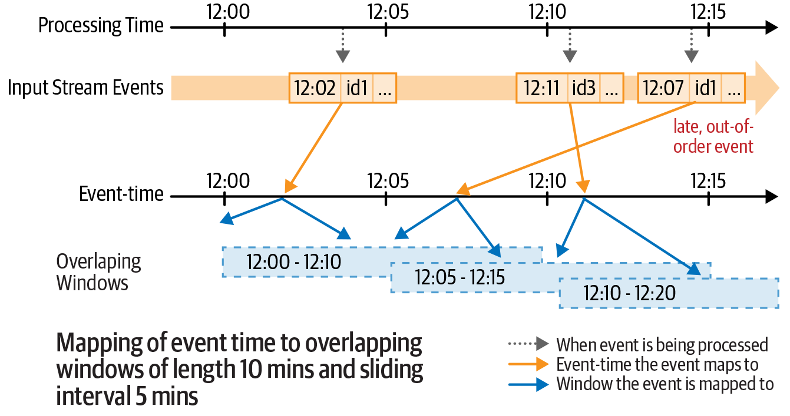
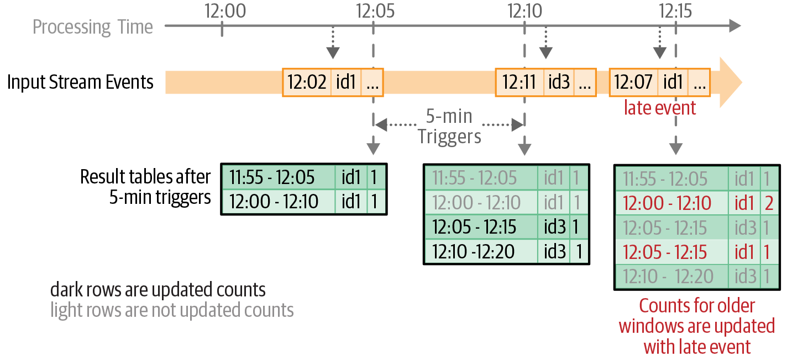
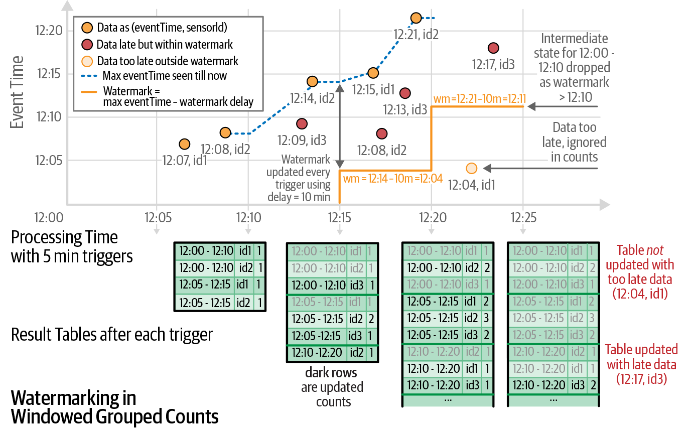

Spark Structured Streaming
Processing large, already-collected batches of data.

Examples of batch data analysis?
Analysis of terabytes of logs collected over a long period of time
Analysis of code bases on GitHub or large repositories like Wikipedia
Nightly analysis on datasets collected over a 24-hour period
Examples of streaming data analysis?
Credit card fraud detection
Sensor data processing
Online advertising based on user actions
Social media notifications
IDC forecasts that by 2025 IoT devices will generate 79.4 zettabytes of data.
Processing every value from a stream of data — values that are constantly arriving.

DStreams — via microbatchingDStreams are represented as a sequence of RDDs.

A StreamingContext is created from an existing SparkContext:
StreamingContextOnce started, no new streaming computations can be set up
Once stopped, it cannot be restarted
Only one StreamingContext can be active per Spark session
stop() on StreamingContext also stops SparkContext
Multiple contexts can be created as long as the previous one is stopped first
DStreams had significant issuesNo unified API for batch and stream: Developers had to explicitly rewrite code to use different classes when converting batch jobs to streaming jobs.
No separation between logical and physical plans: Spark Streaming executes DStream operations in exactly the sequence specified — no scope for automatic optimization.
No native event-time window support: DStreams only support windows based on processing time (when Spark received the record), not event time (when the record was actually generated). This made building accurate pipelines difficult.
Familiar SQL or batch-like DataFrame queries work on your stream exactly as they would on a batch — fault tolerance, optimization, and late data are handled by the engine.
The line between real-time and batch processing has blurred significantly. Structured Streaming supports anything from continuous streaming to periodic micro-batch (e.g., every few hours) with the same code.


Only new rows added to the result table since the last trigger are written to output. Applicable only when existing rows cannot change (e.g., map operations on input streams).
Only rows that were updated since the last trigger are written. Requires a sink that supports in-place updates (e.g., a database table).
The entire updated result table is written to output after every trigger. Typically used with aggregations.
Define input sources
Transform data
Define output sink and output mode
Specify processing details
Start the query
readStream (not read) signals a streaming source"console", "parquet", "kafka", "memory", etc."append", "update", or "complete"Triggering options:
"1 second", "5 minutes")Spark SQL analyzes and optimizes the logical plan to ensure incremental, efficient execution on streaming data.
Spark SQL starts a background thread that continuously executes a loop.
The loop continues until the query is terminated.

Each iteration:
Based on the configured trigger, the thread checks streaming sources for new data.
New data is executed as a micro-batch — an optimized execution plan reads the data, computes the incremental result, and writes output to the sink.
The exact range of data processed and any associated state are checkpointed to allow deterministic reprocessing on failure.
A failure occurs (processing error or cluster failure) → restart from last checkpoint
The query is explicitly stopped via streamingQuery.stop()
The trigger is set to Once → stops after processing all available data
Each execution is a micro-batch. Operations fall into two categories:
select(), explode(), map(), flatMap(), filter(), where() — each input record is processed independently, with no memory of previous rows.
groupBy().count() and other aggregations require maintaining state — a running tally across micro-batches.
Structured Streaming supports two classes:
Aggregations by key — e.g., streaming word count grouped by word
Aggregations by event-time window — e.g., count records received per 5-minute window
Non-overlapping, fixed-size windows. Each event falls in exactly one window.

Overlapping windows of fixed size and stride. An event can fall in multiple windows.


Late-arriving data is common in distributed systems (network delays, out-of-order records). A watermark tells Spark how late data can be while still being included.
A watermark is a moving threshold in event time that trails behind the maximum event time seen by the query. The trailing gap — the watermark delay — defines how long the engine waits for late data.

(max observed event time − watermark delay) are droppedUse Kinesis as a source or sink in Spark Structured Streaming: